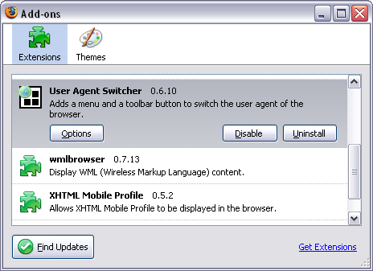
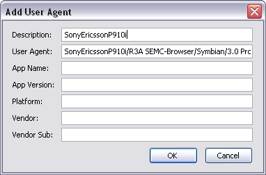

Mobile preview
The Firefox web browser allows you emulate different mobile devices, which may be helpful
while you develop mobile applications. To preview the emulated version of your web application
you will also need to install the User Agent plugin.
Installing Firefox and User Agent Switcher
- Install the Firefox, referring to the Firefox documentation for details
- Start Firefox
- Choose Tools | Add-ons from the Firefox menu to open
the Add-ons dialog
- Click the Get Extensions link. Firefox will open the web service that
allows you to download and install extensions.
- On the list of available extensions find the 'User Agent Switcher' plug-in
- To avoid issues previewing the mobile site, you should install also the 'XHTML Mobile
Profile' and 'wmlbrowser' plug-ins
- Download those plug-ins and restart Firefox

Emulating mobile devices
Now you can emulate Smartphone devices.
- Choose the Tools | User Agent Switcher |
Options | Options... from the Firefox menu
- Choose the User Agents option
- Click the Add button to add a new device
- Type the name of device in the Description text box; in our case
'SonyEricssonP910i'
- Enter the User Agent string for the Smartphone devices; 'SonyEricssonP910i/R3A
SEMC-Browser/Symbian/3.0 Profile/MIDP-2.0 Configuration/CLDC-1.0'

- Click the OK button
- The 'SonyEricssonP910i' appears on the list of available devices
- Switch the user agent to that device by picking it from the Tools |
User Agent Switcher | SonyEricssonP910i menu
- Open the MCS web application to preview the emulated version of the page
- To return to the normal preview choose the Tools | User Agent
Switcher | Default from the Firefox menu
Changing user agents
Switching user agents does not invalidate pages that Firefox has already cached. A
consequence is that if you visit a page, change the user agent and visit the page again, it's
very likely that you will simply see the previously loaded version of the page - even if you
force a reload. You need to clear the cache to view the page using a different user agent.
Normally, you also need to restart Firefox.
Note: If you are using one user agent setting to view a site and you want to view it
using a different one, first stop Firefox. Ensure that all Firefox windows are
closed. Then repeat the sequence for the new user agent. Simply clearing the cache, and
selecting the new user agent, will normally not work. The user agent is not remembered across
Firefox restarts.
A good way to ensure that you see the correct version of a site is to use the following
sequence.
- Start Firefox
- Clear the cache by choosing Tools | Clear Private
Data and ensuring that the Cache is checked. Make sure that
you are not going to clear other data that you wish to keep, and then click Clear
Private Data Now.
- Select the user agent
- Access the pages you want to view